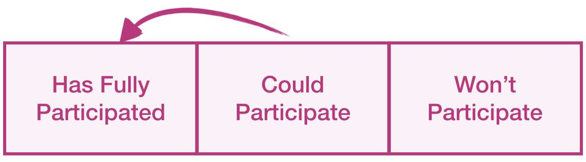

You are here because you are one of the top 5 participants so far. You have been active, and your answers show that you have given thought for the topics of the month. Great job! You would make an excellent mentor for someone!
Would you help with the final push? 15 new participants will guarantee the best possible grade for your company. It makes three participants each if you spread the work evenly.
Get as many employees as possible through the finish line. Every completion counts and 15 new participants guarantee the best possible score for the employer.
Help those who would like to participate but haven't done it yet.
The key to success is to find those who would like to participate but have not yet done so. Some may have just missed the emails. A simple reminder, in this case, can be enough. Some may have planned to participate but forgot or didn't find the right time. Now your skills are needed! Offer your help. Completing the mission together could be twice as fast and guarantees the job will get done. Also, the messenger is important - a real-world encounter works better than emails.
We are looking for additional participants on top of the current ones. We will be watching the completions and update this page at least once per day. New people can start from here.
Identified new participants in week 4: 0/15
Last update: 2019-05-19 17:43 GMT+3
Deadline: 2019-05-27 12:00 GMT+3